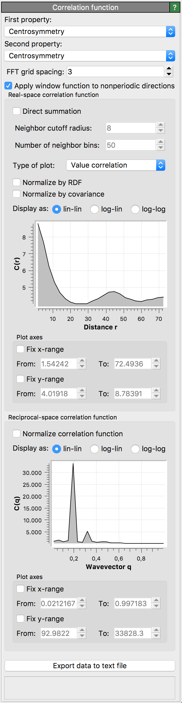

Spatial correlation function
{kind=link}
This modifier calculates the spatial correlation function between two particle properties, \(C(r) = \langle P_1(0) P_2(r) \rangle\) where \(P_1\) and \(P_2\) are the two properties.
OVITO uses a fast Fourier transform (FFT) to compute the convolution. It then computes a radial average in reciprocal and real space. This gives the correlation function up to half of the cell size. The modifier can additionally compute the short-ranged part of the correlation function from a direct summation over neighbors.
For example, when both particle properties (\(P_1\) and \(P_2\)) are constant and unity for all particles in the system, the modifier returns the pair distribution function. The reciprocal space representation is then the structure factor.
Parameters
- First property
First particle property for which to compute the correlation (\(P_1\)).
- Second property
Second particle property for which to compute the correlation (\(P_2\)). If both particle properties are identical, the modifier computes the autocorrelation.
- FFT grid spacing
This property sets the approximate size of the FFT grid cell. The actual size is determined by the distance of the cell faces which must contain an integer number of grid cells.
- Apply window function to non-periodic directions
This property controls whether non-periodic directions have a Hann window applied to them. Applying a window function is necessary to remove spurious oscillations and power-law scaling of the (implicit) rectangular window of the non-periodic domain.
- Direct summation
If enabled, the real-space correlation plot will show the result of a direct calculation of the correlation function, obtaining by summing over neighbors. This short-ranged part of the correlation function is displayed as a red line.
- Neighbor cutoff radius
This property determines the cutoff of the direct calculation of the real-space correlation function.
- Number of neighbor bins
This property sets the number of bins for the direct calculation of the real-space correlation function.
- Type of plot
Value correlation computes \(C(r) = \langle P_1(0) P_2(r) \rangle\).
Difference correlation computes \(\langle (P_1(0) - P_2(r))^2 \rangle/2 = (\langle P_1^2 \rangle + \langle P_2^2 \rangle ) / 2 - C(r)\).
- Normalize by RDF
Divide the value correlation function \(C(r)\) by the radial distribution function (RDF). If difference correlation is selected, then \(C(r)\) is divided by the RDF before the difference correlation is computed.
- Normalize by covariance
Divide the final value or difference correlation function by the covariance.
Acknowledgment
The code for this modifier was contributed to OVITO by Lars Pastewka.
See also
ovito.modifiers.SpatialCorrelationFunctionModifier (Python API)